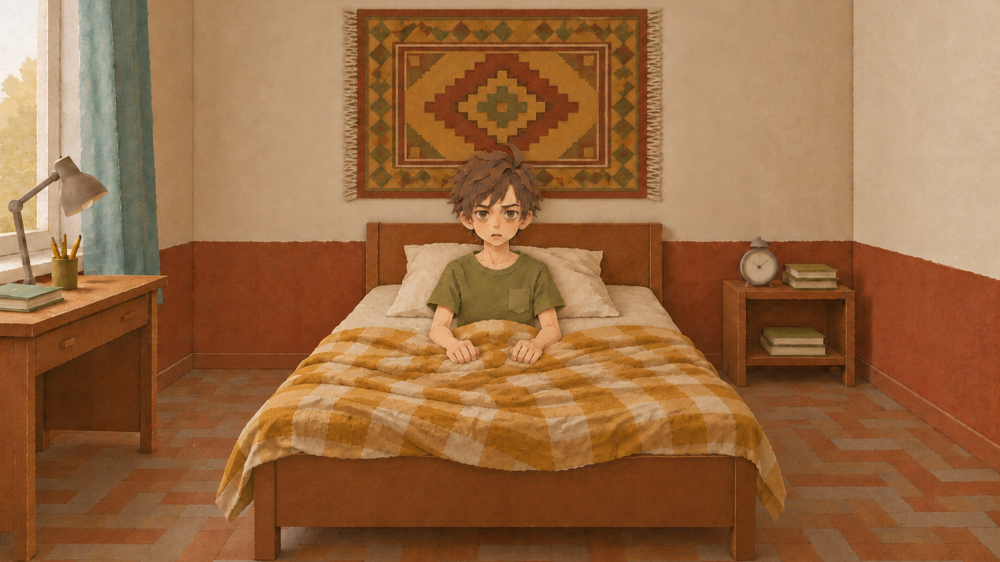
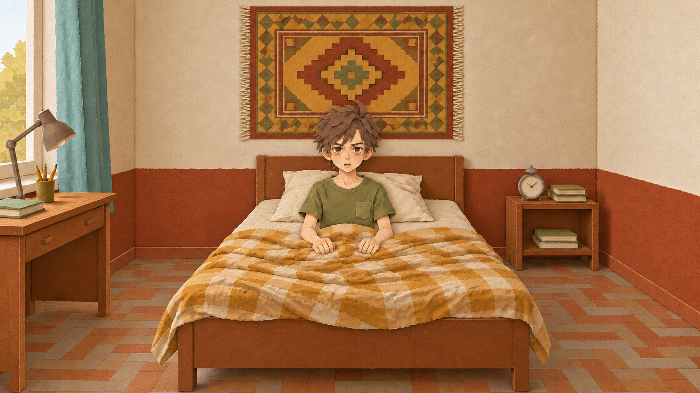

Кандидат пока не принят: фактический размер 1672×941, требуется 2560×1440 (минимум 1920×1080). Оригинал сохранён. Остальные четыре плиты ещё не перерисованы.


Сравните глаза, брови, форму щёк, рот и силуэт волос. Изображения ниже показаны с одинаковой шириной; верхние фрагменты увеличены средствами браузера, сами PNG не изменены.